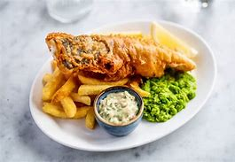
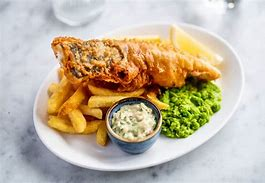

My Travel Adventures
My Travel Adventures
Global Adventure Traveler
My Travel Adventures
Last summer, I had the opportunity to explore the beautiful city of London. From the iconic Big Ben to the charming streets of Covent Garden, every moment was magical. The food was exquisite, especially the fish and chips and afternoon tea!


 

Here are some of my favorite spots:
I also indulged in some local cuisine. The fish and chips were a highlight, and I couldn't resist enjoying a classic afternoon tea at a quaint café.
Return to main